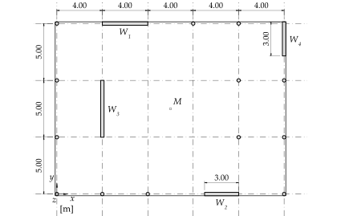
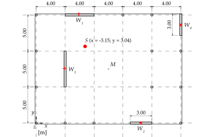
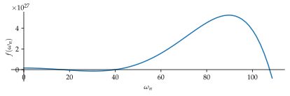
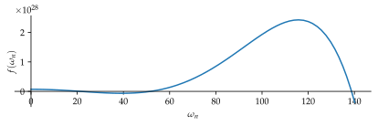
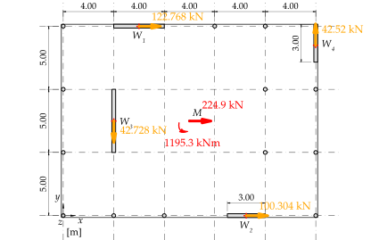
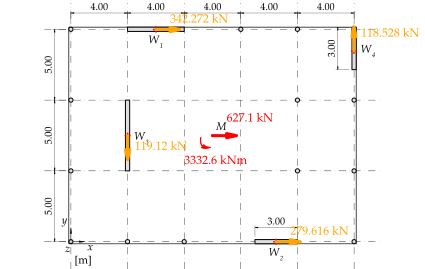
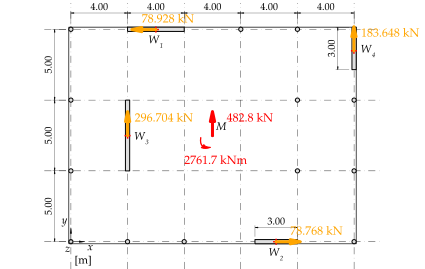
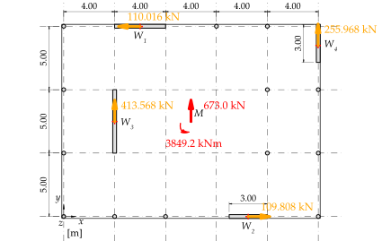

%run style_and_packages.ipynb17 Beispiel: Unsymmetrisch angeordnete Wandscheiben
17.1 Aufgabenstellung
In Abbildung 17.1 ist ein unsymmetrischer Gebäudegrundriss dargestellt. Dieser wird durch vier Stahlbeton-Wandscheiben ausgesteift.

Das Untergeschoss gilt als steifer Kasten, folglich ist der Einspannungshorizont der Wandscheiben Oberkante UG. Es findet eine gewisse Einspannung der Wandscheiben in die Bodenplatte statt, je nach Ausbildung der Fundation. Diese kann man z.B. mit einer elastischen Einspannung (Drehfeder) modellieren. Die elastische Einspannung liegt im Bereich von 20% einer Volleinspannung. Im Beispiel wird diese als gelenkige Lagerung angenommen.

Die Modellierung in Abbildung 17.3 trifft folgende Annahmen:
- Die Decken sind gelenkig an die Tragwände angeschlossen
- Die Deckenscheiben wirken in ihrer Ebene als starre Scheiben
- Die Wandscheiben bzw. Tragwände sind in den Kellerkasten eingespannt, so dass die Modellierung als Kragarm gerechtfertigt ist
- Die Massen der Decken werden im Aufriss als Punktmassen am Kragarm abgebildet (Dabei werden die Massen der Wände pro Geschoss je zur Hälfte der Geschossmassen zugeordnet)
- Die Stützen tragen lediglich zum vertikalen Lastabtrag bei. Deren Steifigkeit kann vernachlässigt werden

Gesucht:
- Schubmittelpunkt
- Erste Eigenperiode
- Ersatzkräfte durch das Ersatzkraftverfahren auf charakteristischem Niveau
Gegeben:
- Baugrundklasse \(B\)
- Erdbebenzone \(Z2\)
- Decken und Wände sind alle \(d\) stark
- Sämtliche Decken gelten als Büroflächen (Lastermittlung - vereinfacht auch die Dachfläche)
- Reduktion der Biegesteifigkeit \(\gamma_{EI}\) zur Berücksichtigung der Rissbildung
E, d, L_y, L_x, L_w1, L_w2, L_w3, L_w4 = sp.symbols('E, d, L_y, L_x, L_w1, L_w2, L_w3, L_w4')
rho_c, gamma_f, q,q_auflast_k, q_nutzlast_k = sp.symbols('rho_c, gamma_f, q, q_auflast_k, q_nutzlast_k')
H_1, H_2, H_3 = sp.symbols("H_1, H_2, H_3")
m_1, m_2, m_3 = sp.symbols('m_1, m_2, m_3')
omega_n =sp.symbols('omega_n', real=True)
gamma_EI = sp.symbols('gamma_EI')
params = {
'E':30000 *unit.N/unit.mm**2,
'd':0.3*unit.m,
'L_y':5*unit.m,
'L_x':4*unit.m,
'L_w1':4*unit.m,
'L_w2':3*unit.m,
'L_w3':5*unit.m,
'L_w4':3*unit.m,
'q': 2.0,
'gamma_f': 1.0,
'q_nutzlast_k': 2*10**3*unit.N/unit.m**2,
'q_auflast_k': 1*10**3*unit.N/unit.m**2,
'H_1':4*unit.m,
'H_2':4*unit.m,
'H_3':4*unit.m,
'rho_c':25000*unit.N / unit.m**3,
'g':10 *unit.m/unit.second**2,
'gamma_EI':1.0,
}
params_plot = convert.param_value(params)
render.dict_to_table(params)| \(E = \frac{30000 \text{N}}{\text{mm}^{2}}\) | \(H_{1} = 4 \text{m}\) |
| \(H_{2} = 4 \text{m}\) | \(H_{3} = 4 \text{m}\) |
| \(L_{w1} = 4 \text{m}\) | \(L_{w2} = 3 \text{m}\) |
| \(L_{w3} = 5 \text{m}\) | \(L_{w4} = 3 \text{m}\) |
| \(L_{x} = 4 \text{m}\) | \(L_{y} = 5 \text{m}\) |
| \(d = 0.3 \text{m}\) | \(g = \frac{10 \text{m}}{\text{s}^{2}}\) |
| \(\gamma_{EI} = 1.0\) | \(\gamma_{f} = 1.0\) |
| \(q = 2.0\) | \(q_{auflast k} = \frac{1000 \text{N}}{\text{m}^{2}}\) |
| \(q_{nutzlast k} = \frac{2000 \text{N}}{\text{m}^{2}}\) | \(\rho_{c} = \frac{25000 \text{N}}{\text{m}^{3}}\) |
17.2 Musterlösung
17.2.1 Schubmittelpunkt
Für die Berechnung des Schubmittelpunktes C wird zunächst angenommen, dass sich die Wandscheiben parallel in y- bzw. z-Richtungen verschieben. Es findet somit keine Verdrehung statt. Die gleiche Verschiebung wird durch die starre Deckenscheibe gewährleistet. Die Wandscheiben können als Biegestäbe (Kragarme) mit der Biegesteifigkeit EI in die jeweilige y- bzw. z-Richtung betrachtet werden. Jede Wandscheibe erfährt bei einer parallelen Verschiebung der starren Deckenscheibe in die jeweilige Richtung die gleiche Kopfverformung (parallel geschaltete Federn).
17.2.1.1 Abstand vom Koordinatennullpunkt
x_i = np.array([
-L_x,
sp.Rational(1.5)*L_x - L_w2/2,
-sp.Rational(1.5)*L_x,
sp.Rational(2.5)*L_x
])
x_dict = {f'x{i+1}': x_i[i].subs(params).evalf(3) for i in range(len(x_i))}
render.dict_to_table(x_dict)| \(x_{1} = - 4.0 \text{m}\) | \(x_{2} = 4.5 \text{m}\) |
| \(x_{3} = - 6.0 \text{m}\) | \(x_{4} = 10.0 \text{m}\) |
y_i = np.array([
sp.Rational(1.5)*L_y,
-sp.Rational(1.5)*L_y,
0*L_y,
sp.Rational(1.5)*L_y - L_w4/2
])
y_dict = {f'y{i+1}': y_i[i].subs(params).evalf(3) for i in range(len(y_i))}
render.dict_to_table(y_dict)| \(y_{1} = 7.5 \text{m}\) | \(y_{2} = - 7.5 \text{m}\) |
| \(y_{3} = 0\) | \(y_{4} = 6.0 \text{m}\) |
17.2.1.2 Wandlängen
Wandlängen in \(X\)-Richtung
L_x_i = np.array([
L_w1,
L_w2,
d,
d
])
l_x_dict = {f'L_x{i+1}': L_x_i[i].subs(params).evalf(3) for i in range(len(L_x_i))}
render.dict_to_table(l_x_dict)| \(L_{x1} = 4.0 \text{m}\) | \(L_{x2} = 3.0 \text{m}\) |
| \(L_{x3} = 0.3 \text{m}\) | \(L_{x4} = 0.3 \text{m}\) |
Wandlängen in \(Y\)-Richtung
L_y_i = np.array([
d,
d,
L_w3,
L_w4
])
l_y_dict = {f'L_y{i+1}': L_y_i[i].subs(params).evalf(3) for i in range(len(L_y_i))}
render.dict_to_table(l_y_dict)| \(L_{y1} = 0.3 \text{m}\) | \(L_{y2} = 0.3 \text{m}\) |
| \(L_{y3} = 5.0 \text{m}\) | \(L_{y4} = 3.0 \text{m}\) |
17.2.1.3 Trägheitsmoment
Lediglich die Eigenträgheitsmomente sind beschrieben.
\[ I_{xi} = \frac{L_{yi}^3 \cdot L_{xi} }{12} \tag{17.1}\]
I_x_i = L_y_i**3 * L_x_i / 12
I_x_dict = {f'I_x{i+1}': I_x_i[i].subs(params).evalf(3) for i in range(len(I_x_i))}
render.dict_to_table(I_x_dict)| \(I_{x1} = 0.009 \text{m}^{4}\) | \(I_{x2} = 0.00675 \text{m}^{4}\) |
| \(I_{x3} = 3.13 \text{m}^{4}\) | \(I_{x4} = 0.675 \text{m}^{4}\) |
\[ I_{yi} = \frac{L_{xi}^3 \cdot L_{yi} }{12} \tag{17.2}\]
I_y_i = L_x_i**3 * L_y_i / 12
I_y_dict = {f'I_y{i+1}': I_y_i[i].subs(params).evalf(3) for i in range(len(I_y_i))}
render.dict_to_table(I_y_dict)| \(I_{y1} = 1.6 \text{m}^{4}\) | \(I_{y2} = 0.675 \text{m}^{4}\) |
| \(I_{y3} = 0.0112 \text{m}^{4}\) | \(I_{y4} = 0.00675 \text{m}^{4}\) |
\[ I_{k,ersatz} = \sum_{i=1}^{N_{Waende}} I_{ki} \tag{17.3}\]
Angewendet auf die Aufgabe:
I_x_ersatz = np.sum(I_x_i)
I_y_ersatz = np.sum(I_y_i)
render.eq_display('I_x_ersatz', I_x_ersatz.subs(params),
'I_y_ersatz', I_y_ersatz.subs(params))\[\begin{equation}I_{x ersatz} = 3.81575 \text{m}^{4}\end{equation}\]
\[\begin{equation}I_{y ersatz} = 2.293 \text{m}^{4}\end{equation}\]
Multipliziert mit dem Elastizitätsmodul zur Bestimmung der Biegesteifigkeit:
EI_x = E*I_x_ersatz
EI_y = E*I_y_ersatz
render.eq_display('EI_x_ersatz', EI_x.subs(params).simplify(),
'EI_y_ersatz', EI_y.subs(params).simplify())\[\begin{equation}EI_{x ersatz} = 114472500000.0 \text{m}^{2} \text{N}\end{equation}\]
\[\begin{equation}EI_{y ersatz} = 68790000000.0 \text{m}^{2} \text{N}\end{equation}\]
17.2.1.4 Abstände des Schubmittelpunkts zum Massenschwerpunkt
\[ y_c = \frac{\sum_{i=1}^n EI_{y,i}y_i}{\sum_{i=1}^n EI_{y,i}} \tag{17.4}\]
\[ x_c = \frac{\sum_{i=1}^n EI_{x,i}x_i}{\sum_{i=1}^n EI_{x,i}} \tag{17.5}\]
Angewendet auf die Aufgabe:
x_i_0 = np.array([
sp.Rational(1.5)*L_x,
sp.Rational(4)*L_x - L_w2/2,
L_x,
sp.Rational(5)*L_x
])
y_i_0 = np.array([
sp.Rational(3)*L_y,
0*L_y,
sp.Rational(1.5)*L_y,
sp.Rational(3)*L_y-L_w4/2
])
y_c = np.sum(E*I_y_i*y_i) / np.sum(E*I_y_i)
x_c = np.sum(E*I_x_i*x_i) / np.sum(E*I_x_i)
render.eq_display('y_c', y_c.subs(params).evalf(3),
'x_c', x_c.subs(params).evalf(3))\[\begin{equation}y_{c} = 3.04 \text{m}\end{equation}\]
\[\begin{equation}x_{c} = - 3.15 \text{m}\end{equation}\]
import svgutils.compose as sc
from IPython.display import SVG
##Wandschwerpunkte
x_i_plot = [x.subs(params)/unit.m for x in x_i]
y_i_plot = [y.subs(params)/unit.m for y in y_i]
##Plattenrand
platte_x = [-sp.Rational(2.5)*L_x, sp.Rational(2.5)*L_x,
sp.Rational(2.5)*L_x, -sp.Rational(2.5)*L_x,
-sp.Rational(2.5)*L_x]
platte_y = [-sp.Rational(1.5)*L_y, -sp.Rational(1.5)*L_y,
sp.Rational(1.5)*L_y, sp.Rational(1.5)*L_y,
-sp.Rational(1.5)*L_y]
platte_x_plot = [x.subs(params)/unit.m for x in platte_x]
platte_y_plot = [y.subs(params)/unit.m for y in platte_y]
##Schubmittelpunkt
x_c_plot = x_c.subs(params).evalf(3)/unit.m
y_c_plot = y_c.subs(params).evalf(3)/unit.m
# Erstellen Sie den Plot mit angepasster Größe und gleichem Seitenverhältnis der Achsen
fig, ax = plt.subplots(1, figsize=(4.5,4.5))
ax.set_aspect('equal')
ax.scatter(x_i_plot, y_i_plot, color='red', marker='+')
ax.scatter(x_c_plot, y_c_plot, color='red', marker='o')
ax.annotate(f'$S$ (x = {x_c_plot}; y = {y_c_plot})', xy = [x_c_plot*1, y_c_plot*1.2])
ax.axis('off')
fig.savefig('bilder/cover.svg', transparent=True)
plt.close(fig)
# Hier beginnt die Montage mit svgutils und angepasster SVG-Größe
sc.Figure("425.197", "269.291",
sc.Panel(sc.SVG("bilder/aufgabe_ekv_gebaeude_GR.svg").scale(1)),
sc.Panel(sc.SVG("bilder/cover.svg")).move(74,-29)
).save("bilder/compose.svg")
SVG('bilder/compose.svg')
17.2.2 Massenmatrix \(M\)

17.2.3 Lastermittlung
Gemäss Schweizerischer Ingenieur- und Architektenverein (SIA) (2020) Ziff. 16.5.2.3 sind ständige und quasiständige Lasten anzusetzen. Bei der Lastermittlung werden die Gewichtskräfte aus Eigenmassen und Auflasten ermittelt. Dazu werden pro Stockwerk die Gewichtskräfte der Wände definiert. Eine Punktmasse erhält jeweils die Hälfte der darunter- und darüber liegenden Wände. Für die Decke über 2.OG bleibt folglich nur eine Hälfte der Wände.
A_decke = 5*L_x* 3 * L_y
G_decke = A_decke * rho_c* d
G_waende_stock = (L_w1 +L_w2+L_w3+L_w4)*H_1 * rho_c * d
Q_auflast_k = q_auflast_k * A_decke
Q_nutzlast_k = q_nutzlast_k * A_decke
psi_2 = 0.3
params['m_3'] = ((G_decke + Q_auflast_k+ G_waende_stock/2+psi_2 * Q_nutzlast_k)/g).subs(params)
params['m_2'] = ((G_decke + Q_auflast_k+ G_waende_stock+psi_2 * Q_nutzlast_k)/g).subs(params)
params['m_1'] = ((G_decke + Q_auflast_k+ G_waende_stock+psi_2 * Q_nutzlast_k)/g).subs(params)
render.eq_display('A_Decke', A_decke.subs(params).evalf(3),
'G_Decke_k', G_decke.subs(params).evalf(3),
'G_Waende_k', G_waende_stock.subs(params).evalf(3),
'Q_auflast_k', Q_auflast_k.subs(params).evalf(3),
'Q_nutzlast_k', Q_nutzlast_k.subs(params).evalf(3),
'psi_2', psi_2,
)
\[\begin{equation}A_{Decke} = 300.0 \text{m}^{2}\end{equation}\]
\[\begin{equation}G_{Decke k} = 2.25 \cdot 10^{6} \text{N}\end{equation}\]
\[\begin{equation}G_{Waende k} = 4.5 \cdot 10^{5} \text{N}\end{equation}\]
\[\begin{equation}Q_{auflast k} = 3.0 \cdot 10^{5} \text{N}\end{equation}\]
\[\begin{equation}Q_{nutzlast k} = 6.0 \cdot 10^{5} \text{N}\end{equation}\]
\[\begin{equation}\psi_{2} = 0.3\end{equation}\]
Daraus lassen sich die Punktmassen bestimmen:
render.eq_display('m_1', "(G_decke + Q_auflast_k+ G_Waende_k+psi_2 * Q_nutzlast_k)/g",
'm_1', m_1.subs(params).evalf(3),
'm_2', "(G_decke + Q_auflast_k+ G_Waende_k+psi_2 * Q_nutzlast_k)/g",
'm_2', m_2.subs(params).evalf(3),
'm_3', "(G_decke + Q_auflast_k+ G_Waende_k/2+psi_2 * Q_nutzlast_k)/g",
'm_3', m_3.subs(params).evalf(3))\[\begin{equation}m_{1} = \frac{G_{Waende k} + G_{decke} + Q_{auflast k} + Q_{nutzlast k} \psi_{2}}{g}\end{equation}\]
\[\begin{equation}m_{1} = \frac{3.18 \cdot 10^{5} \text{N} \text{s}^{2}}{\text{m}}\end{equation}\]
\[\begin{equation}m_{2} = \frac{G_{Waende k} + G_{decke} + Q_{auflast k} + Q_{nutzlast k} \psi_{2}}{g}\end{equation}\]
\[\begin{equation}m_{2} = \frac{3.18 \cdot 10^{5} \text{N} \text{s}^{2}}{\text{m}}\end{equation}\]
\[\begin{equation}m_{3} = \frac{\frac{G_{Waende k}}{2} + G_{decke} + Q_{auflast k} + Q_{nutzlast k} \psi_{2}}{g}\end{equation}\]
\[\begin{equation}m_{3} = \frac{2.95 \cdot 10^{5} \text{N} \text{s}^{2}}{\text{m}}\end{equation}\]
17.2.3.1 X-Richtung
M_x = sp.Matrix([[m_1,0,0],[0,m_2,0],[0,0,m_3]])
render.eq_display(sp.MatrixSymbol('M_x', 3, 3), M_x,
sp.MatrixSymbol('M_x', 3, 3), M_x.subs(params))\[\begin{equation}\mathbf{M}_{x} = \left[\begin{matrix}m_{1} & 0 & 0\\0 & m_{2} & 0\\0 & 0 & m_{3}\end{matrix}\right]\end{equation}\]
\[\begin{equation}\mathbf{M}_{x} = \left[\begin{matrix}\frac{318000.0 \text{N} \text{s}^{2}}{\text{m}} & 0 & 0\\0 & \frac{318000.0 \text{N} \text{s}^{2}}{\text{m}} & 0\\0 & 0 & \frac{295500.0 \text{N} \text{s}^{2}}{\text{m}}\end{matrix}\right]\end{equation}\]
17.2.3.2 Y-Richtung
M_y = sp.Matrix([[m_1,0,0],[0,m_2,0],[0,0,m_3]])
render.eq_display(sp.MatrixSymbol('M_y', 3, 3), M_y,
sp.MatrixSymbol('M_y', 3, 3), M_y.subs(params))\[\begin{equation}\mathbf{M}_{y} = \left[\begin{matrix}m_{1} & 0 & 0\\0 & m_{2} & 0\\0 & 0 & m_{3}\end{matrix}\right]\end{equation}\]
\[\begin{equation}\mathbf{M}_{y} = \left[\begin{matrix}\frac{318000.0 \text{N} \text{s}^{2}}{\text{m}} & 0 & 0\\0 & \frac{318000.0 \text{N} \text{s}^{2}}{\text{m}} & 0\\0 & 0 & \frac{295500.0 \text{N} \text{s}^{2}}{\text{m}}\end{matrix}\right]\end{equation}\]
17.2.4 Steifigkeitsmatrix \(K\)
17.2.4.1 X-Richtung
Aufgrund der gelenkigen Verbindung zwischen Platten und Wände gilt für die Ersatzsteifigkeit:
\[ k = \frac{3EI}{H^3} \tag{17.6}\]
Die Biegesteifigkeit \(EI\) wird um den Faktor \(\gamma_{EI}\) reduziert zur Berücksichtigung der Rissbildung. Zusätzlich gilt, die Ersatzsteifigkeit in X-Richtung entspricht \(EI_y\). Dazu wird für \(H\) die entsprechende Höhe ab Einspannhorizont eingesetzt.
params[H] = (H_1+H_2+H_3).subs(params)
k_1_x = 3 * EI_y*gamma_EI / (H_1)**3
k_2_x = 3 * EI_y*gamma_EI / (H_1+H_2)**3
k_3_x = 3 * EI_y*gamma_EI / (H_1+H_2+H_3)**3
render.eq_display(
'k_1_x', '3 * EI_y*gamma_EI / (H_1)**3',
'k_1_x', k_1_x.subs(params).simplify().evalf(3),
'k_2_x', '3 * EI_y*gamma_EI / (H_1+H_2)**3',
'k_2_x', k_2_x.subs(params).simplify().evalf(3),
'k_3_x', '3 * EI_y*gamma_EI / (H_1+H_2+H_3)**3',
'k_3_x', k_3_x.subs(params).simplify().evalf(3))\[\begin{equation}k_{1 x} = \frac{3 EI_{y} \gamma_{EI}}{H_{1}^{3}}\end{equation}\]
\[\begin{equation}k_{1 x} = \frac{3.22 \cdot 10^{9} \text{N}}{\text{m}}\end{equation}\]
\[\begin{equation}k_{2 x} = \frac{3 EI_{y} \gamma_{EI}}{\left(H_{1} + H_{2}\right)^{3}}\end{equation}\]
\[\begin{equation}k_{2 x} = \frac{4.03 \cdot 10^{8} \text{N}}{\text{m}}\end{equation}\]
\[\begin{equation}k_{3 x} = \frac{3 EI_{y} \gamma_{EI}}{\left(H_{1} + H_{2} + H_{3}\right)^{3}}\end{equation}\]
\[\begin{equation}k_{3 x} = \frac{1.19 \cdot 10^{8} \text{N}}{\text{m}}\end{equation}\]
Abgefüllt in die Steifigkeitsmatrix
K_x = sp.Matrix([[k_1_x + k_2_x, -k_2_x, 0],[-k_2_x,k_2_x+k_3_x, -k_3_x], [0,-k_3_x, k_3_x]])
render.eq_display(
sp.MatrixSymbol('K_x', 3, 3), "Matrix([[k_1_x + k_2_x, -k_2_x, 0],[-k_2_x,k_2_x+k_3_x, -k_3_x], [0,-k_3_x, k_3_x]])",
sp.MatrixSymbol('K_x', 3, 3), sp.simplify(K_x.subs(params)).evalf(3)
)\[\begin{equation}\mathbf{K}_{x} = \left[\begin{matrix}k_{1 x} + k_{2 x} & - k_{2 x} & 0\\- k_{2 x} & k_{2 x} + k_{3 x} & - k_{3 x}\\0 & - k_{3 x} & k_{3 x}\end{matrix}\right]\end{equation}\]
\[\begin{equation}\mathbf{K}_{x} = \left[\begin{matrix}\frac{3.63 \cdot 10^{9} \text{N}}{\text{m}} & - \frac{4.03 \cdot 10^{8} \text{N}}{\text{m}} & 0\\- \frac{4.03 \cdot 10^{8} \text{N}}{\text{m}} & \frac{5.23 \cdot 10^{8} \text{N}}{\text{m}} & - \frac{1.19 \cdot 10^{8} \text{N}}{\text{m}}\\0 & - \frac{1.19 \cdot 10^{8} \text{N}}{\text{m}} & \frac{1.19 \cdot 10^{8} \text{N}}{\text{m}}\end{matrix}\right]\end{equation}\]
17.2.4.2 Y-Richtung
k_1_y = 3 * EI_x*gamma_EI / H_1**3
k_2_y = 3 * EI_x*gamma_EI / (H_1+H_2)**3
k_3_y = 3 * EI_x*gamma_EI / (H_1+H_2+H_3)**3
render.eq_display(
'k_1_y', k_1_y.subs(params).simplify().evalf(3),
'k_2_y', k_2_y.subs(params).simplify().evalf(3),
'k_3_y', k_3_y.subs(params).simplify().evalf(3))\[\begin{equation}k_{1 y} = \frac{5.37 \cdot 10^{9} \text{N}}{\text{m}}\end{equation}\]
\[\begin{equation}k_{2 y} = \frac{6.71 \cdot 10^{8} \text{N}}{\text{m}}\end{equation}\]
\[\begin{equation}k_{3 y} = \frac{1.99 \cdot 10^{8} \text{N}}{\text{m}}\end{equation}\]
Abgefüllt in die Steifigkeitsmatrix
K_y = sp.Matrix([[k_1_y + k_2_y, -k_2_y, 0],[-k_2_y,k_2_y+k_3_y, -k_3_y], [0,-k_3_y, k_3_y]])
render.eq_display(
sp.MatrixSymbol('K_y', 3, 3), "Matrix([[k_1_y + k_2_y, -k_2_y, 0],[-k_2_y,k_2_y+k_3_y, -k_3_y], [0,-k_3_y, k_3_y]])",
sp.MatrixSymbol('K_y', 3, 3), sp.simplify(K_y.subs(params)).evalf(3)
)\[\begin{equation}\mathbf{K}_{y} = \left[\begin{matrix}k_{1 y} + k_{2 y} & - k_{2 y} & 0\\- k_{2 y} & k_{2 y} + k_{3 y} & - k_{3 y}\\0 & - k_{3 y} & k_{3 y}\end{matrix}\right]\end{equation}\]
\[\begin{equation}\mathbf{K}_{y} = \left[\begin{matrix}\frac{6.04 \cdot 10^{9} \text{N}}{\text{m}} & - \frac{6.71 \cdot 10^{8} \text{N}}{\text{m}} & 0\\- \frac{6.71 \cdot 10^{8} \text{N}}{\text{m}} & \frac{8.7 \cdot 10^{8} \text{N}}{\text{m}} & - \frac{1.99 \cdot 10^{8} \text{N}}{\text{m}}\\0 & - \frac{1.99 \cdot 10^{8} \text{N}}{\text{m}} & \frac{1.99 \cdot 10^{8} \text{N}}{\text{m}}\end{matrix}\right]\end{equation}\]
17.2.5 Eigenkreisfrequenzen
Bei einem Mehrmassenschwinger gibt es entsprechend den Freiheitsgraden Eigenkreisfrequenzen \(\omega_n\). Diese lassen sich anhand folgender Gleichung bestimmen:
\[ \det{[\mathbf{K}-\omega_n^2 \mathbf{M}]=0} \tag{17.7}\]
17.2.5.1 X-Richtung
params_plot = convert.param_value(params)
eq_omega = sp.det((K_x-omega_n**2*M_x).subs(params_plot))
omega_n_solve= sp.solve([eq_omega.subs(params_plot).simplify(), omega_n<=5000, omega_n>=0], omega_n, dict=True)
omega_1_x = omega_n_solve.args[0].rhs/unit.second
omega_2_x = omega_n_solve.args[1].rhs/unit.second
omega_3_x = omega_n_solve.args[2].rhs/unit.second
render.eq_display('omega_1_x', omega_1_x.evalf(3),
'omega_2_x', omega_2_x.evalf(3),
'omega_3_x', omega_3_x.evalf(3))
\[\begin{equation}\omega_{1 x} = \frac{16.7}{\text{s}}\end{equation}\]
\[\begin{equation}\omega_{2 x} = \frac{40.1}{\text{s}}\end{equation}\]
\[\begin{equation}\omega_{3 x} = \frac{108.0}{\text{s}}\end{equation}\]
sp.plot(eq_omega.subs(params_plot).evalf(5).simplify(),(omega_n, 0, max([omega_1_x,omega_2_x,omega_3_x])*unit.second*1.01),size=(5.9,2), show=False).show()
17.2.5.2 Y-Richtung
eq_omega = sp.det((K_y-omega_n**2*M_y).subs(params_plot))
omega_n_solve= sp.solve([eq_omega.subs(params_plot).simplify(), omega_n<=5000, omega_n>=0], omega_n, dict=True)
omega_1_y = omega_n_solve.args[0].rhs/unit.second
omega_2_y = omega_n_solve.args[1].rhs/unit.second
omega_3_y = omega_n_solve.args[2].rhs/unit.second
render.eq_display('omega_1_y', omega_1_y.evalf(3),
'omega_2_y', omega_2_y.evalf(3),
'omega_3_y', omega_3_y.evalf(3))
\[\begin{equation}\omega_{1 y} = \frac{21.6}{\text{s}}\end{equation}\]
\[\begin{equation}\omega_{2 y} = \frac{51.7}{\text{s}}\end{equation}\]
\[\begin{equation}\omega_{3 y} = \frac{139.0}{\text{s}}\end{equation}\]
sp.plot(eq_omega.subs(params_plot).evalf(5).simplify(),(omega_n, 0, max([omega_1_y,omega_2_y,omega_3_y])*unit.second*1.01),size=(5.9,2), show=False).show()
17.2.6 Eigenperioden
Die Eigenperioden lassen sich aus den Eigenkreisfrequenzen bestimmen. Das Ersatzkraftverfahren betrachtet lediglich die Grundfrequenz. Weitere Schwingformen werden vernachlässigt. Aus diesem Grund sind in Schweizerischer Ingenieur- und Architektenverein (SIA) (2020) Abs. 16.5.2 Einschränkungen bei der Anwendung des Ersatzkraftverfahrens aufgelistet. Ziel dieser Einschränkungen ist es, dass lediglich Bauwerke untersucht werden, welche massgeblich in der Grundfrequenz schwingen.
\[ T = \frac{2\pi}{\omega_1} \tag{17.8}\]
17.2.6.1 X-Richtung
Nach Schweizerischer Ingenieur- und Architektenverein (SIA) (2020) 16.5.2.3
T_1_x_approx = 2*sp.sqrt(58.2/1000)*unit.second
render.eq_display('T_1_x_approx', T_1_x_approx.subs(params).evalf(3))\[\begin{equation}T_{1 x approx} = 0.482 \text{s}\end{equation}\]
Durch die ermittelte Grundfrequenz
T_1_x = (2*sp.pi) / omega_1_x
render.eq_display('T_1_x', T_1_x.subs(params).evalf(3))\[\begin{equation}T_{1 x} = 0.376 \text{s}\end{equation}\]
17.2.6.2 Y-Richtung
Nach Schweizerischer Ingenieur- und Architektenverein (SIA) (2020) 16.5.2.3
T_1_y_approx = 2*sp.sqrt(34.9/1000)*unit.second
render.eq_display('T_1_y_approx', T_1_y_approx.subs(params).evalf(3))\[\begin{equation}T_{1 y approx} = 0.374 \text{s}\end{equation}\]
Durch die ermittelte Grundfrequenz
T_1_y = (2*sp.pi) / omega_1_y
render.eq_display('T_1_y', T_1_y.subs(params).evalf(3))\[\begin{equation}T_{1 y} = 0.291 \text{s}\end{equation}\]
17.2.7 Pseudobeschleunigung
Es wird für die Eigenperioden die Pseudobeschleunigung bestimmt. Siehe dazu Schweizerischer Ingenieur- und Architektenverein (SIA) (2020).
a_gd = 1.0 *unit.m/unit.second**2
render.eq_display('a_gd', a_gd)\[\begin{equation}a_{gd} = \frac{1.0 \text{m}}{\text{s}^{2}}\end{equation}\]
17.2.7.1 X-Richtung
S_e_x = antwortspektrum(a_gd, T_1_x.subs(params).evalf(3), Baugrundklasse='B')
render.eq_display('S_e_x', S_e_x.evalf(3))| \(S = 1.2\) | \(T_{B} = 0.08 \text{s}\) |
| \(T_{C} = 0.35 \text{s}\) | \(T_{D} = 2.0 \text{s}\) |
| \(\eta = 1\) |
\[\begin{equation}S_{e} = \frac{2.5 S_{} T_{C} a_{gd} \eta}{T}\end{equation}\]
\[\begin{equation}S_{e x} = \frac{2.8 \text{m}}{\text{s}^{2}}\end{equation}\]
17.2.7.2 Y-Richtung
S_e_y = antwortspektrum(a_gd, T_1_y.subs(params).evalf(3), Baugrundklasse='B')
render.eq_display('S_e_y', S_e_y.evalf(3))| \(S = 1.2\) | \(T_{B} = 0.08 \text{s}\) |
| \(T_{C} = 0.35 \text{s}\) | \(T_{D} = 2.0 \text{s}\) |
| \(\eta = 1\) |
\[\begin{equation}S_{e} = 2.5 S_{} a_{gd} \eta\end{equation}\]
\[\begin{equation}S_{e y} = \frac{3.0 \text{m}}{\text{s}^{2}}\end{equation}\]
17.2.8 Bemessungsspektrum
17.2.8.1 X-Richtung
S_d_x = bemessungsspektrum(a_gd, T_1_x.subs(params).evalf(3), params['q'], params['gamma_f'],Baugrundklasse='B')
render.eq_display('S_d_x', S_d_x.evalf(3))| \(S = 1.2\) | \(T_{B} = 0.08 \text{s}\) |
| \(T_{C} = 0.35 \text{s}\) | \(T_{D} = 2.0 \text{s}\) |
| \(a_{gd} = \frac{1.0 \text{m}}{\text{s}^{2}}\) | \(g = \frac{10.0 \text{m}}{\text{s}^{2}}\) |
| \(\gamma_{f} = 1.0\) | \(q = 2.0\) |
\[\begin{equation}S_{d} = \frac{2.5 S_{} T_{C} a_{gd} \gamma_{f}}{T g q}\end{equation}\]
\[\begin{equation}S_{d x} = 0.14\end{equation}\]
17.2.8.2 Y-Richtung
S_d_y = bemessungsspektrum(a_gd, T_1_y.subs(params).evalf(3), params['q'], params['gamma_f'],Baugrundklasse='B')
render.eq_display('S_d_y', S_d_y.evalf(3))| \(S = 1.2\) | \(T_{B} = 0.08 \text{s}\) |
| \(T_{C} = 0.35 \text{s}\) | \(T_{D} = 2.0 \text{s}\) |
| \(a_{gd} = \frac{1.0 \text{m}}{\text{s}^{2}}\) | \(g = \frac{10.0 \text{m}}{\text{s}^{2}}\) |
| \(\gamma_{f} = 1.0\) | \(q = 2.0\) |
\[\begin{equation}S_{d} = \frac{2.5 S_{} a_{gd} \gamma_{f}}{g q}\end{equation}\]
\[\begin{equation}S_{d y} = 0.15\end{equation}\]
17.2.9 Stockwerkquerkraft
Die Stockwerksquerkraft resultiert nach Norm aus Gleichung 17.9. Es wird lediglich die Nutzlast berücksichtigt. Zusätzlich ist zwischen beiden Richtungen zu unterscheiden.
\[ F_d = S_d \cdot \sum_{j=1} (G_k + \psi_2 \cdot Q_k)_j \tag{17.9}\]
Aufgeteilt auf die Geschosse wird diese nach Gleichung 17.10.
\[ F_{d,i} = \frac{z_i \sum_{i=1} (G_k + \psi_2 \cdot Q_k)_i}{\sum_{j=1} z_j\cdot(G_k + \psi_2 \cdot Q_k)_j} \cdot F_d \tag{17.10}\]
Der Term der Gleichung 17.11 entspricht den Punktmassen.
\[ G_k + \psi_2 \cdot Q_k \tag{17.11}\]
Die Ersatzkraft greift am Massenschwerpunkt der Decke an. Diese gilt es ins Steifigkeitszentrum zu verschieben. Daraus resultiert ein Torsionsmoment.
17.2.9.1 X-Richtung
F_d_x = np.sum(np.array([m_1, m_2, m_3])*g*S_d_x)
render.eq_display('F_d_x', F_d_x.subs(params).evalf(3))\[\begin{equation}F_{d x} = 1.3 \cdot 10^{6} \text{N}\end{equation}\]
H_masse_i = np.array([(H_1) * m_1,(H_1+H_2) * m_2,(H_1+H_2+H_3) * m_3])
V_x_i = H_masse_i / np.sum(H_masse_i) * F_d_x
V_x_i_dict = {f'V_x{i+1}': V_x_i[i].subs(params).evalf(3) for i in range(len(V_x_i))}
render.dict_to_table(V_x_i_dict)| \(V_{x1} = 2.25 \cdot 10^{5} \text{N}\) | \(V_{x2} = 4.5 \cdot 10^{5} \text{N}\) |
| \(V_{x3} = 6.27 \cdot 10^{5} \text{N}\) |
17.2.9.2 Y-Richtung
F_d_y = np.sum(np.array([m_1, m_2, m_3])*g*S_d_y)
render.eq_display('F_d_y', F_d_y.subs(params).evalf(3))\[\begin{equation}F_{d y} = 1.4 \cdot 10^{6} \text{N}\end{equation}\]
V_y_i = H_masse_i / np.sum(H_masse_i) * F_d_y
V_y_i_dict = {f'V_y{i+1}': V_y_i[i].subs(params).evalf(3) for i in range(len(V_y_i))}
render.dict_to_table(V_y_i_dict)| \(V_{y1} = 2.41 \cdot 10^{5} \text{N}\) | \(V_{y2} = 4.83 \cdot 10^{5} \text{N}\) |
| \(V_{y3} = 6.73 \cdot 10^{5} \text{N}\) |
17.2.10 Wandkoordinaten zum Schubmittelpunkt
Der Ursprung des Koordinatensystems wird in das Steifigkeitszentrum gelegt.
x_i_star = x_i-x_c
x_i_star_dict = {f'x{i+1}': x_i_star[i].subs(params).evalf(3) for i in range(len(x_i_star))}
render.dict_to_table(x_i_star_dict)| \(x_{1} = - 0.854 \text{m}\) | \(x_{2} = 7.65 \text{m}\) |
| \(x_{3} = - 2.85 \text{m}\) | \(x_{4} = 13.1 \text{m}\) |
y_i_star = y_i - y_c
y_i_star_dict = {f'y{i+1}': y_i_star[i].subs(params).evalf(3) for i in range(len(y_i_star))}
render.dict_to_table(y_i_star_dict)| \(y_{1} = 4.46 \text{m}\) | \(y_{2} = - 10.5 \text{m}\) |
| \(y_{3} = - 3.04 \text{m}\) | \(y_{4} = 2.96 \text{m}\) |
17.2.11 Stockwerkstorsion
Beachte die Vorzeichenkonvention: Das Torsionsmoment ist positiv im Gegenuhrzeigersinn.
Nach Norm (Schweizerischer Ingenieur- und Architektenverein (SIA), 2020) 16.5.3.4 ist die Exzentrizität (Schubmittelpunkt zu Massenschwerpunkt) anhand der Gebäudeabmessungen zu erhöhen.
\[ e_{d,sup} = 1.5\cdot e+0.05\cdot b \tag{17.12}\]
\[ e_{d,inf} = 0.5\cdot e-0.05\cdot b \tag{17.13}\]
\(b\) Gebäudebreite in der entsprechenden Kraftrichtung
\(e\) Exzentrizität
Aus den entstehenden 4 Lastfällen ist der ungünstigste massgebend. Es wird lediglich \(e_{d,sup}\) betrachtet.
17.2.11.1 X-Richtung
e_d_y_sup = sp.Abs(y_c) * 1.5+0.05*3*L_y
render.eq_display('e_dysup', e_d_y_sup.subs(params).evalf(3))\[\begin{equation}e_{dysup} = 5.31 \text{m}\end{equation}\]
T_x_i = V_x_i * e_d_y_sup
T_x_i_dict = {f'T_x{i+1}': T_x_i[i].subs(params).evalf(3) for i in range(len(T_x_i))}
render.dict_to_table(T_x_i_dict)
| \(T_{x1} = 1.2 \cdot 10^{6} \text{m} \text{N}\) | \(T_{x2} = 2.39 \cdot 10^{6} \text{m} \text{N}\) |
| \(T_{x3} = 3.33 \cdot 10^{6} \text{m} \text{N}\) |
17.2.11.2 Y-Richtung
e_d_x_sup = sp.Abs(x_c) * 1.5+0.05*5*L_x
render.eq_display('e_dxsup', e_d_x_sup.subs(params).evalf(3))\[\begin{equation}e_{dxsup} = 5.72 \text{m}\end{equation}\]
T_y_i = V_y_i * e_d_x_sup
T_y_i_dict = {f'T_y{i+1}': T_y_i[i].subs(params).evalf(3) for i in range(len(T_y_i))}
render.dict_to_table(T_y_i_dict)| \(T_{y1} = 1.38 \cdot 10^{6} \text{m} \text{N}\) | \(T_{y2} = 2.76 \cdot 10^{6} \text{m} \text{N}\) |
| \(T_{y3} = 3.85 \cdot 10^{6} \text{m} \text{N}\) |
17.2.12 Wandquerkraft
Die Kräfte wirken jeweils parallel zur Wandebene. Die Beanspruchung der einzelnen Wandscheiben durch die Stockwerkquerkraft \(V_{xi}\) oder \(V_{yi}\) setzt sich aus einem Translationsanteil (Querkraft) und einem Rotationsanteil (Torsion) zusammen. Diese können sich im Grundriss günstig oder ungünstig überlagern.
Der Kraftanteil wird durch Gleichung 17.14 und Gleichung 17.15 bestimmt.
\[ F_{x,i} = \frac{V_{x} \cdot I_{yi}}{\sum_{i=1}^n I_{y,i}} - T_{x} \cdot \frac{I_{y,i} \cdot y_i^\star}{\sum (I_{x,i} \cdot x_i^{\star 2}) + ( I_{y,i} \cdot y_i^{\star 2})} \tag{17.14}\]
\[ F_{y,i} = \frac{V_{y} \cdot I_{xi}}{\sum_{i=1}^n I_{x,i}} + T_{y} \cdot \frac{I_{x,i} \cdot x_i^\star}{\sum (I_{x,i} \cdot x_i^{\star 2}) + ( I_{y,i} \cdot y_i^{\star 2})} \tag{17.15}\]
Dabei kann Gleichung 17.16 als Wölbmoment interpretiert werden.
\[ \sum (I_{x,i} \cdot x_i^{\star 2}) + ( I_{y,i} \cdot y_i^{\star 2}) \tag{17.16}\]
Wichtig ist dabei die Unterscheidung anhand der Ausrichtung der Wand. Als Beispiel wird für eine Einwirkung in X-Richtung für Wand 1 und Wand 2 die Gleichung 17.14 verwendet und für die Wand 3 und Wand 4 Gleichung 17.15 mit Einwirkung \(V_y = 0\) und für \(T_y\) wird \(T_x\) eingesetzt.
Die dargestellten Resultate entsprechen den Einwirkungen auf die Wandscheiben pro Stockwerk. Zur Ermittlung der Wandquerkraft im EG sind sämtliche Stockwerkquerkräfte zu addieren.
def kraft_plot(kraft_vektor,torsionsmoment, querkraft, name='test', richtung='X'):
from matplotlib.patches import FancyArrowPatch
# Erstellen Sie den Plot mit angepasster Größe und gleichem Seitenverhältnis der Achsen
fig, ax = plt.subplots(1, figsize=(4.55,4.55))
ax.set_aspect('equal')
# Wandmittelpunkte
ax.scatter(x_i_plot, y_i_plot, color='red', marker='+')
# Kraft-Vektoren
forces = np.float64(kraft_vektor/unit.N)
for i, (x, y) in enumerate(zip(x_i_plot, y_i_plot)):
if i < 2:
ax.arrow(x, y, forces[i]/abs(forces[i]), 0, head_width=0.3, head_length=0.7, fc='orange', ec='orange', linewidth=3)
ax.text(x + forces[i]/abs(forces[i]), y + 0.5, f'{abs(forces[i])/1000} kN', fontsize=12, color='orange')
else:
ax.arrow(x, y, 0, forces[i]/abs(forces[i]), head_width=0.3, head_length=0.7, fc='orange', ec='orange', linewidth=3)
ax.text(x + 0.5, y + forces[i]/abs(forces[i]), f'{abs(forces[i])/1000} kN', fontsize=12, color='orange')
# Einwirkungen
arrow = FancyArrowPatch((-0.8, 0), (0, -0.8), connectionstyle="arc3,rad=0.8", arrowstyle="Simple,tail_width=0.3,head_width=4,head_length=8", color="red")
ax.add_patch(arrow)
ax.text(-2, -2, f'{np.round(torsionsmoment/1000,1)} kNm', fontsize=12, color='red')
if richtung == 'X':
ax.arrow(0, 0, querkraft/ abs(querkraft), 0, head_width=0.3, head_length=0.7, fc='red', ec='red', linewidth=3)
ax.text(0 + 1, 0 + 1, f'{np.round(querkraft/1000,1)} kN', fontsize=12, color='red')
if richtung == 'Y':
ax.arrow(0, 0, 0,querkraft/ abs(querkraft), head_width=0.3, head_length=0.7, fc='red', ec='red', linewidth=3)
ax.text(0 + 1, 0 + 1, f'{np.round(querkraft/1000,1)} kN', fontsize=12, color='red')
ax.axis('off')
fig.savefig(f'bilder/{name}_Vektoren.svg', transparent=True)
plt.close(fig)
# Hier beginnt die Montage mit svgutils und angepasster SVG-Größe
sc.Figure("425.197", "269.291",
sc.Panel(sc.SVG("bilder/aufgabe_ekv_gebaeude_GR.svg").scale(1)),
sc.Panel(sc.SVG(f'bilder/{name}_Vektoren.svg')).move(73,-30)
).save(f'bilder/{name}_Vektoren_GR.svg')
display(SVG(f'bilder/{name}_Vektoren_GR.svg'))17.2.12.1 X-Richtung
Wandkraft_i_durch_V_x = np.array([])
Wandkraft_durch_V_x_list = []
for j in range(0,len(V_x_i)):
Wandkraft_12_durch_V_x = (V_x_i[j] * I_y_i[0:2] / np.sum(I_y_i)) - T_x_i[j] * (I_y_i[0:2]*y_i_star[0:2])/ np.sum((I_x_i*x_i_star**2)+(I_y_i*y_i_star**2))
Wandkraft_34_durch_V_x = T_x_i[j] * (I_x_i[2:]*x_i_star[2:])/ np.sum((I_x_i*x_i_star**2)+(I_y_i*y_i_star**2))
Wandkraft_durch_V_x = np.concatenate((Wandkraft_12_durch_V_x,Wandkraft_34_durch_V_x))
Wandkraft_i_durch_V_x = np.append(Wandkraft_i_durch_V_x, [Wandkraft_durch_V_x[i].subs(params).evalf(3) for i in range(len(Wandkraft_durch_V_x))])
Wandkraft_durch_V_x_dict = {f'F_x_{j+1}{i+1}': Wandkraft_durch_V_x[i].subs(params).evalf(3) for i in range(len(Wandkraft_durch_V_x))}
Wandkraft_durch_V_x_list.append(Wandkraft_durch_V_x_dict)render.dict_to_table(Wandkraft_durch_V_x_list[0])| \(F_{x 11} = 1.23 \cdot 10^{5} \text{N}\) | \(F_{x 12} = 1.0 \cdot 10^{5} \text{N}\) |
| \(F_{x 13} = - 4.27 \cdot 10^{4} \text{N}\) | \(F_{x 14} = 4.25 \cdot 10^{4} \text{N}\) |
kraft_plot(Wandkraft_i_durch_V_x[0:4],np.float64(T_x_i_dict['T_x1']/unit.m/unit.N),np.float64(V_x_i_dict['V_x1']/unit.N), name='V_x_stock_1', richtung='X')
render.dict_to_table(Wandkraft_durch_V_x_list[1])| \(F_{x 21} = 2.46 \cdot 10^{5} \text{N}\) | \(F_{x 22} = 2.01 \cdot 10^{5} \text{N}\) |
| \(F_{x 23} = - 8.55 \cdot 10^{4} \text{N}\) | \(F_{x 24} = 8.5 \cdot 10^{4} \text{N}\) |
kraft_plot(Wandkraft_i_durch_V_x[4:8],np.float64(T_x_i_dict['T_x2']/unit.m/unit.N),np.float64(V_x_i_dict['V_x2']/unit.N), name='V_x_stock_2', richtung='X')
render.dict_to_table(Wandkraft_durch_V_x_list[2])| \(F_{x 31} = 3.42 \cdot 10^{5} \text{N}\) | \(F_{x 32} = 2.8 \cdot 10^{5} \text{N}\) |
| \(F_{x 33} = - 1.19 \cdot 10^{5} \text{N}\) | \(F_{x 34} = 1.19 \cdot 10^{5} \text{N}\) |
kraft_plot(Wandkraft_i_durch_V_x[8:],np.float64(T_x_i_dict['T_x3']/unit.m/unit.N),np.float64(V_x_i_dict['V_x3']/unit.N), name='V_x_stock_3', richtung='X')
17.2.12.2 Y-Richtung
Wandkraft_i_durch_V_y = np.array([])
Wandkraft_durch_V_y_list = []
for j in range(0,len(V_y_i)):
Wandkraft_34_durch_V_y = (V_y_i[j] * I_x_i[2:] / np.sum(I_x_i)) + T_y_i[j] * (I_x_i[2:]*x_i_star[2:])/ np.sum((I_x_i*x_i_star**2)+(I_y_i*y_i_star**2))
Wandkraft_12_durch_V_y = -T_y_i[j] * (I_y_i[0:2]*y_i_star[0:2])/ np.sum((I_x_i*x_i_star**2)+(I_y_i*y_i_star**2))
Wandkraft_durch_V_y = np.concatenate((Wandkraft_12_durch_V_y,Wandkraft_34_durch_V_y),axis=0)
Wandkraft_i_durch_V_y = np.append(Wandkraft_i_durch_V_y, [Wandkraft_durch_V_y[i].subs(params).evalf(3) for i in range(len(Wandkraft_durch_V_y))])
Wandkraft_durch_V_y_dict = {f'F_y_{j+1}{i+1}': Wandkraft_durch_V_y[i].subs(params).evalf(3) for i in range(len(Wandkraft_durch_V_y))}
Wandkraft_durch_V_y_list.append(Wandkraft_durch_V_y_dict)render.dict_to_table(Wandkraft_durch_V_y_list[0])| \(F_{y 11} = - 3.95 \cdot 10^{4} \text{N}\) | \(F_{y 12} = 3.94 \cdot 10^{4} \text{N}\) |
| \(F_{y 13} = 1.48 \cdot 10^{5} \text{N}\) | \(F_{y 14} = 9.18 \cdot 10^{4} \text{N}\) |
kraft_plot(Wandkraft_i_durch_V_y[0:4],np.float64(T_y_i_dict['T_y1']/unit.m/unit.N),np.float64(V_y_i_dict['V_y1']/unit.N), name='V_y_stock_1', richtung='Y')render.dict_to_table(Wandkraft_durch_V_y_list[1])| \(F_{y 21} = - 7.89 \cdot 10^{4} \text{N}\) | \(F_{y 22} = 7.88 \cdot 10^{4} \text{N}\) |
| \(F_{y 23} = 2.97 \cdot 10^{5} \text{N}\) | \(F_{y 24} = 1.84 \cdot 10^{5} \text{N}\) |
kraft_plot(Wandkraft_i_durch_V_y[4:8],np.float64(T_y_i_dict['T_y2']/unit.m/unit.N),np.float64(V_y_i_dict['V_y2']/unit.N), name='V_y_stock_2', richtung='Y')
render.dict_to_table(Wandkraft_durch_V_y_list[2])| \(F_{y 31} = - 1.1 \cdot 10^{5} \text{N}\) | \(F_{y 32} = 1.1 \cdot 10^{5} \text{N}\) |
| \(F_{y 33} = 4.14 \cdot 10^{5} \text{N}\) | \(F_{y 34} = 2.56 \cdot 10^{5} \text{N}\) |
kraft_plot(Wandkraft_i_durch_V_y[8:],np.float64(T_y_i_dict['T_y3']/unit.m/unit.N),np.float64(V_y_i_dict['V_y3']/unit.N), name='V_y_stock_3', richtung='Y')